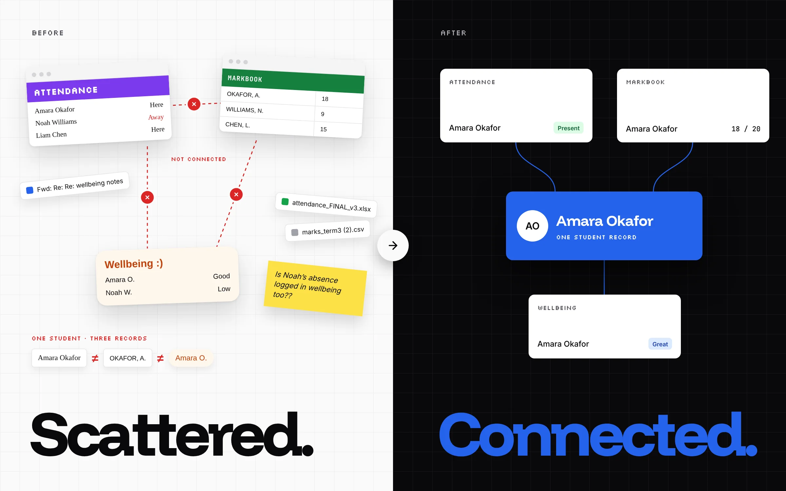
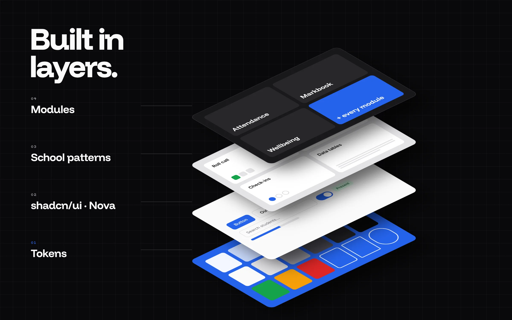
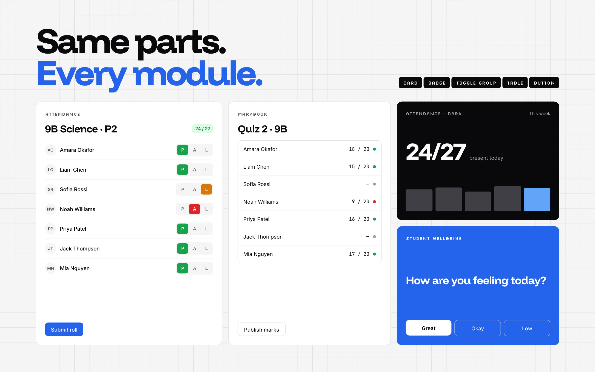
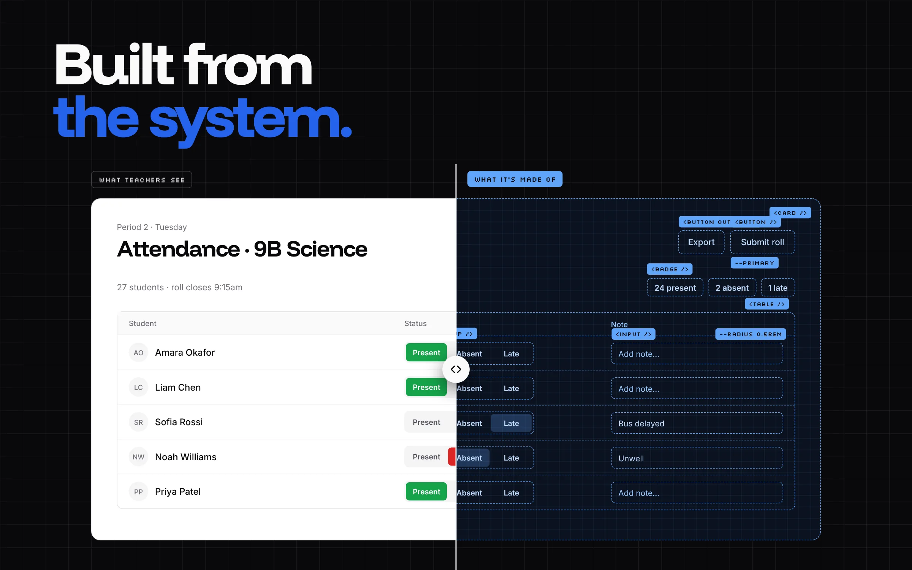
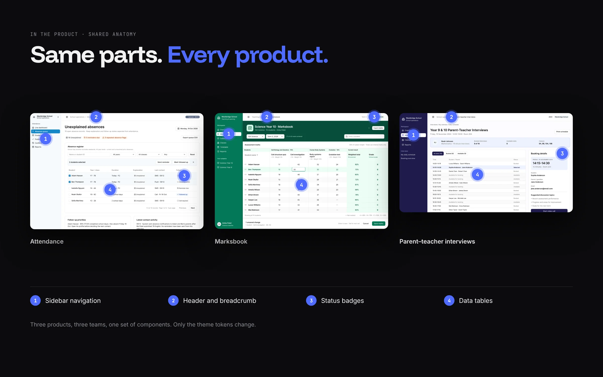
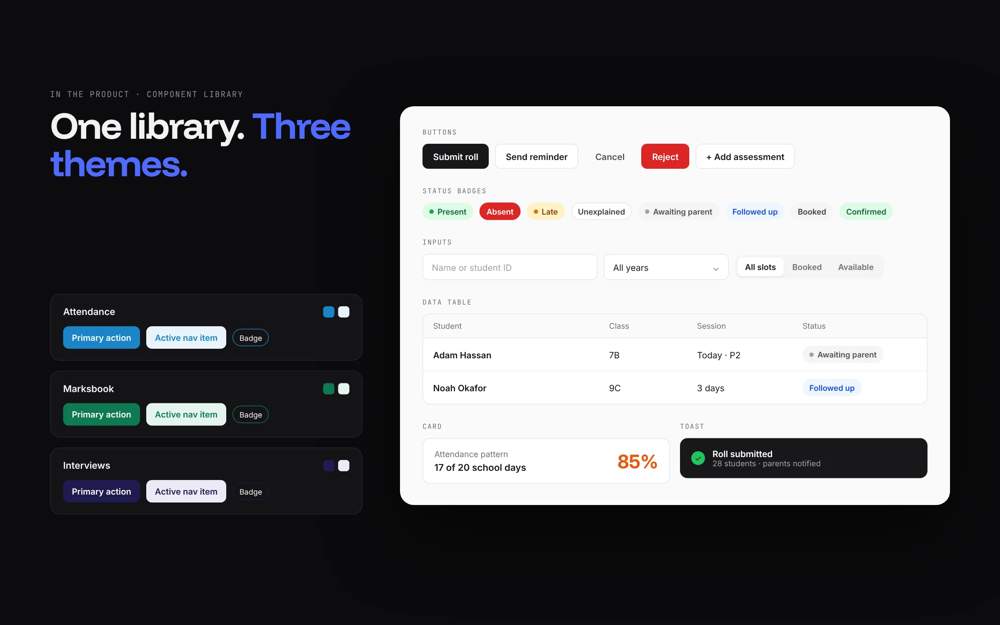
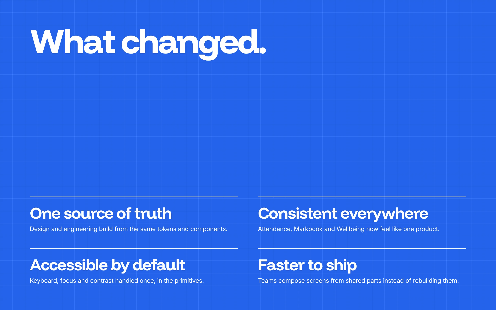

Design System
One system for every product, built and governed across four work streams.
Four work streams shipping in parallel will drift apart unless something holds them together.
Teacher, administrator and parent products were being designed and built at the same time. Without shared foundations, the same decisions get remade in every stream and the products start to feel like different products.

After, every module builds from the same parts and points at one record.
I built the system from the bottom up: foundations, then tokens, then components, then patterns lifted from real product work like roll marking and report building. Alongside it I set up how the system is governed, so it keeps its shape as more teams use it.
Four work streams contribute across every layer
Work stream 1Work stream 2Work stream 3Work stream 4


Requests move through six stages. Usage and feedback feed the next request.
From the first need raised by a work stream to tracking adoption, every change follows the same path. That is what keeps the system honest.
- RequestAny work stream raises a need with a real use case.
- TriageWeekly review: reuse, extend or add new.
- DesignSpecs in Figma with states and usage guidance.
- BuildTokens and components versioned in code.
- ReleaseRelease notes and migration guidance.
- AdoptUsage tracked across products and teams.
Three products, one anatomy.
Attendance, Marksbook and Parent–teacher interviews are built by different teams, yet they share the same navigation, headers, badges and tables. Each product only swaps its theme tokens.



Screens show sample data.
Next projectMarksbook →